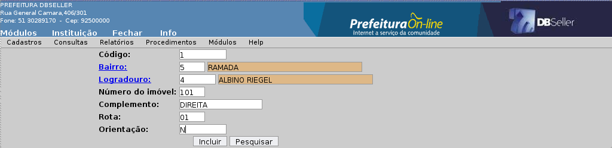
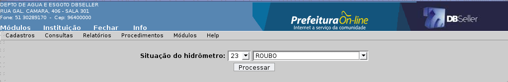

Índice
CADASTRO DE SITUAÇÃO DE LEITURA 3
CADASTRO DE TIPOS DE ISENÇÃO 4
CADASTRO DE ENDEREÇO DE ENTREGA 4
CADASTRO DE DIÂMETRO DE HIDRÔMETRO 5
CADASTRO DE MARCA DE HIDRÔMETRO 6
CADASTRO DE IMÓVEIS/TERRENOS 9
CADASTRO DE BAIXAS DE IMÓVEIS 16
CADASTRO DE SITUAÇÃO DE CORTE 16
CONSULTA DE IMÓVEIS/TERRENOS 18
IMOVEL/HIDRÔMETRO POR LOGRADOURO 18
RELATÓRIO DE CONSUMO/EXCESSO 20
RELATÓRIO DE SITUAÇÃO DE HIDRÔMETRO 22
POSIÇÃO DA ÁGUA CALCULADA E ARRECADADA 23
Emissão de Planilha de Leituras 25
PERMITIR QUE USUÁRIO ALTERE CONSUMO 36
PERMITIR QUE USUÁRIO ALTERE EXCESSO 36
PROCESSAMENTO DA LISTA DE CORTE 37
O cadastro de situação de leitura, consiste em criar um banco de informações sobre as situação que serão utilizadas junto aos leituristas e a digitação para referenciar fatos ocorridos durante a leituras dos hidrômetros.
Na inclusão os campos a serem preenchidos serão o código e descrição, onde o primeiro será preenchido pelo usuário obedecendo a sequência a ser seguida. O campo descrição será preenchido com o nome da situação, e necessário que esta seja de forma abreviada.
Figura 1
Existe uma peculiaridade com relação ao campo regra, pois existem três situações distintas que na qual será possível enquadrar a situação de leitura, são elas:
Normal: Considera que a situação e normal, ou seja não se trata de uma situação especial.
Sem leitura: E uma regra que se aplica quando não e possível informar leitura mas e necessário calcular a economia referente a matricula.
Cancelamento: E a regra utilizada para a informar no momento do cálculo que existe uma troca de hidrômetro no período.
É possível alterar todos os itens desta rotina, porém, é necessário atenção com relação ao item regra, este afeta o emprego na situação da leitura digitada.
É necessário atentar para este item, pois a exclusão de uma situação poderá afetar a leitura digitada e indiretamente a cobrança a ela gerada.
Os campos a serem preenchidos serão o código e descrição, onde o primeiro será preenchido pelo usuário obedecendo a sequência a ser seguida. O campo descrição será preenchido com o nome da isenção, e necessário que esta seja de forma abreviada.
Figura 2
Disponibilizada para alteração dos itens cadastrados, obedecendo o uso desta a nível de cadastro.
Assim como a alteração, a exclusão poderá ser feita de forma peculiar, avaliando seu uso pelo cadastro.
Esta rotina tem como objetivo viabilizar vários casos onde o contribuinte e/ou administrador irão solicitar a instituição que o comprovante de débito seja entregue em outro lugar que não seja aquele cadastrado para o imóvel ou o endereço do CGM.

Figura
3
O campo código deverá ser preenchido conforme sequência determinada, já o campo bairro e logradouro e possível efetuar a pesquisa no link indicado pelo nome do campo. O bairro e o logradouro precisam ser preenchidos sincronisadamente, obedecendo os logradouros de um determinado bairro, e vice-versa. O complemento e um campo onde poderá ser preenchido por alguma peculiaridade, como o lado do logradouro onde se encontra o número determinado no campo acima.
O campo rota deverá ser preenchido pela informação da rota de entrega dos carnês e verificação das leituras. O campo orientação e a posição dentro da carta topográfica do município onde o logradouro se encontra(norte, sul, leste e oeste).
Disponibilizada para alteração dos itens cadastrados, obedecendo o uso desta a nível de cadastro.
Assim como a alteração, a exclusão poderá ser feita de forma peculiar, avaliando seu uso pelo cadastro.
O cadastro de diâmetro de hidrômetros consiste na informação bem específica com relação aos tamanhos dos equipamentos de medição utilizados pela instituição.
Figura
4
Os campos que aparecem neste cadastro são código diâmetro e diâmetro, mas somente o diâmetro será inserido pelo usuário, que será de fato a informação que será utilizada durante o cadastro do equipamento na instituição. O código do diâmetro será preenchido de forma automática pelo sistema, obedecendo uma sequência.
Disponibilizada para alteração dos itens cadastrados, obedecendo o uso desta a nível de cadastro.
Assim como a alteração, a exclusão poderá ser feita de forma peculiar, avaliando seu uso pelo cadastro.
O cadastro de marcas, será utilizado para identificar o fabricante do equipamento que na qual será utilizado para fazer uma nova instalação, ou mesmo para identificar um hidrômetro que esta saindo ou entrando para a manutenção.
Figura
5
Os campos a serem preenchidos são:
Código: Deverá ser preenchido obedecendo sequência determinada pelo usuário;
Marca: Campo aonde será informada a marca do equipamento;
Sigla: Abreviação da marca do equipamento que está sendo cadastrado.
Disponibilizada para alteração dos itens cadastrados, obedecendo o uso desta a nível de cadastro.
Assim como a alteração, a exclusão poderá ser feita de forma peculiar, avaliando seu uso pelo cadastro.
No cadastro de leiturista e onde constam informações sobre o pessoal que efetua a coleta dos dados dos hidrômetros.
Figura
5
Dentre os campos a serem preenchidos, estão o leiturista, esta informação e oriunda da base de dados do cadastro geral do município-CGM, pode ser escolido clicando no link com o mesmo nome, ou então informando o número do CGM de sua escolha.
O campo data inicio e data fim e o período em que este elemento estará exercendo a função de leiturista. Quando este pertence ao quadro de funcionários da instituição, e se o usuário(responsável pelo cadastro)preferir poderá não informar data final, sendo assim, este cadastro nunca expirará.
Disponibilizada para alteração dos itens cadastrados, obedecendo o uso desta a nível de cadastro.
Assim como a alteração, a exclusão poderá ser feita de forma peculiar, avaliando seu uso pelo cadastro.
Dentro do cadastro de condomínio, existe a possibilidade de dentro de uma mesma matricula conseguir agrupar outras matriculas para adminstração.
Como segue a figura abaixo, e necessário informar primeiramente a matricula “Mãe” onde estaram contidas todas as outras que dentro desta formaram o condomínio. Neste cadastro, não e necessário informar o codigo, pois este será informado pelo sistema.
Figura
6
Na segunda aba, e onde iremos inserir as matriculas que faram parte do condomínio.
Disponibilizada para alteração dos itens cadastrados, obedecendo o uso desta a nível de cadastro.
Assim como a alteração, a exclusão poderá ser feita de forma peculiar, avaliando seu uso pelo cadastro.
Este item da aba cadastros, se refere ao cadastro técnico da instituição, e tem por objetivo a criação e manutenção de matriculas.
Em um primeiro momento teremos que informar a matriculas que pretendemos cadastrar, tendo em vista que estas informações poderão estar em sincronia com o cadastro técnico municipal, ou não, sendo que este dependerá do caso a ser analisado pelo responsável.
No campo proprietário será inserido o nome do proprietário do bem(este com a escritura lavrada no registro de imóveis), poderá ser utilizado o link para a pesquisa, caso se mostre necessário(conforme já descrito, informações contidas no CGM), já no campo promitente, será inserido o nome do proprietário que adquiriu o bem através de contrato de compra e venda, este não possui aval do registro de imóveis, mas aos olhos da instituição, caso exista, e o verdadeiro dono do bem.
O campo logradouro será preenchido com o endereço do imóvel, junto com o bairro e o número. Os campos quadra e distrito seram preenchidos com base nas informações do cadastro da instituição.
O campo zona fiscal é a zona de cobrança, e esta dependerá da localidade do imóvel no município, com base nestas informações será gerado o cálculo para a matrícula. A zona de entrega e o cadastro responsável pela localidade aonde será entregue as correspondências que saem da instituição e chegam na casa do contribuinte. Este cadastro entrará em conformidade com as rotas de entrega que são a espinha dorsal das entregas de documentos.
O campo orientação, será preenchido com as informações referente a orientação do logradouro que fora cadastrado para o imóvel, pois existem ruas que possuem orientação direita/esquerda com base em outro logradouro. A rota e um agrupamento de logradouros, que estão uma determinada área geográfica para agilizar o processo de entrega de documentos.
O campo economias e simplesmente a quantidade de familias, ou agrupamento de pessoas que estão ocupando o local. Existe uma forma bem peculiar para cada instituição analisar o número adequado de pessoas que a formam, porém de forma genérica pode-se dizer que um grupo de três a quatro pessoas formam uma economia.
O campo multiplica economias, e uma ferramenta utilizada também pelo cadastro de condomínios, quando possuem vários apartamento e mostra-se necessário calcular o consumo de todo o prédio e dividir pelo número de apartamentos.
O campo cadastro , se refere a data que foi feita a inclusão desta matricula no cadastro de imóveis/terrenos.
Existe um link chamado características, onde pode ser inserido as informações sobre:
Tipo de emissão: Se para esta matricula será impresso mensal, anual ou não será emitido, independente ter sido calculado os débitos;
Esgoto: Se este estará ligado ou desligado ou até mesmo sem esgoto, ou se este foi instalado de forma específica em um determinado local(esgoto promorar ou esgoto outros);
Água: Equivalente ao que está para o item esgoto, acrescentando o item água cortada, que será utilizada por exemplo em imóveis cujo o abatecimento foi suspenso e bem está desocupado;
Hidrometria: Possui somente o item troca de hidrômetro;
Controle corte: Este item e bem importante, e se reflete no controle dos corte, pois este cadastro poderá ou não liberar o imóvel para corte.
Na aba responsável será possível inserir um reponsável pelo imóvel, que poderá ser um dos envolvidos no matricula(promitente e proprietário), ou então uma terceira pessoa, que ficará responsável para responder por irregularidades no imóvel.
Na
aba entrega, fica cadastrado as informações referentes
ao endereço de entrega, aonde será entregue as
correspondências referentes ao imóvel, essa entrega
poderá ser no endereço de algum administrador
previamente cadastrado no cadastro de endereço de entrega.
Na aba construções e necessário informar algumas características do imóvel, quantidade de construções, área construída, se tem pavimentos(e a quantidade), quantidade de famílias e número de pessoas que ocupam o imóvel.
Ao efetuar a inclusão, e necessário fazer a discriminação de outras características mais peculiares do imóvel. Para efetuar esta, e necessário clicar na letra 'A'(logo abaixo de construções, na aba opções) e clicar no link características.
Em tipos de construção , possui varias opções com relação ao tipo de construção efetuada no local, entre elas estão; alvenaria, madeira e outras.
Em um segundo momento veremos o item uso da habitação, onde vamos informar qual o uso do imóvel, como residencial, comercial, etc.
Logo abaixo, segue o item construção aonde vamos informar a qual a situação do imóvel, se esta e um edifício, um sobrado, ou mesmo se possui mesmo construção.
E também específicando a especie de construção, como por exemplo, se uma casa, apartamento, sala comercial, etc.
Possui também uma aba vencimentos, onde e possível alterar o vencimento de alguma parcela, ou até mesmo de um débito inteiro, independente deste já ter sido calculado e possuir uma data.
Disponibilizada para alteração dos itens cadastrados, obedecendo o uso desta a nível de cadastro.
Assim como a alteração, a exclusão poderá ser feita de forma peculiar, avaliando seu uso pelo cadastro.
Como vimos anteriormente e necessário fazer a inclusão de diversas informação com relação aos hidrometros, todas estas complementam o cadastro de hidrometros, onde de fato iremos inserir as informação sobre estes equipamentos.
Seguem abaixo a relação dos campos, e suas respectivas informações:
Código: Deverá ser inserido pelo usuário, obedecendo uma sequência, já estabelecita pela instituição;
Matrícula: A matricula onde será instalado o equipamento, onde este estará vinculado(somente em novas instalações);
Número: Número do imóvel;
Diâmetro: Diâmetro do equipamento a ser instalado, obedecendo as informações já inseridas no cadastro de diametros de hidrometros;
Marca: Marca do equipamento a ser instalado, obedecendo as informações já inseridas no cadastro de marcas;
Dígitos: Quantidade de dígitos que possui o equipamento, sempre informando os dígitos legíveis(ou seja, que interessam para a leitura), ex.:
Marca : LAO
Diâmetro: ¾
Dígitos: 4(+1)
No caso o '+1' não será inserido no cadastro, pois este dígito não influencia no momento da leitura do hidrômetro, geralmente este possui coloração vermelha;
Data da instalação: Data que de fato foi instalado no local, porém deve-se atentar para esta, pois influencia diretamente no cálculo;
Leitura inicial: Leitura feita quando foi instalado no local, no caso de hidrômetros novos, esta leitura será sempre um, em casos mais específicos(geralmente hidrômetros usados) pode-se instalar hidrômetros com valor maior que um, para adequação. Este item também influencia diretamente no cálculo;
Ano/mês: Somente para referenciar o ano e mês da instalação do hidrometro no local;
Situação: A situação será utilizada para descrever em que condição foi instalado o hidrômetro, no entando, em instalações novas, ou mesmo em trocas, deverá sempre utilizar uma situação que descreva exatamente o que está sendo feito.
Disponibilizada para alteração dos itens cadastrados, obedecendo o uso desta a nível de cadastro.
Assim como a alteração, a exclusão poderá ser feita de forma peculiar, avaliando seu uso pelo cadastro.
No cadastro de baixas de imóveis e possível efetuar a desativação de um imóvel que por algum motivo não está mais em uso.
Neste cadastro e necessário inserir a matricula a ser baixada, a data em que foi realizado a baixa, e no campo observações poderá ser colocado algumas informações complementares. Existe ainda um campo para informar o usuário que realizou o procedimento.
Disponibilizada para alteração dos itens cadastrados, obedecendo o uso desta a nível de cadastro.
Assim como a alteração, a exclusão poderá ser feita de forma peculiar, avaliando seu uso pelo cadastro.
No cadastro de situação de corte e a ferramenta pela qual podemos qualificar os envolvidos nas planilhas.
Seguem abaixo os campos deste cadastro:
Situação: Campo numérico que deverá ser preenchido utilizando uma sequência determinada pela instituição;
Descrição : Campo de preenchimento obrigatório, onde será descrito o nome da situação.
Regra: Campo muito importante, onde será determinado de que forma será tratada a situação, e esta se divide em quatro:
Normal: Não realiza nenhum tipo de alteração na situação, utilizado geralmente para avisos;
Inicia procedimento de corte: Como o próprio nome fala, esta regra coloca a matricula em situação de corte, disponibilizando esta nas listas que virão subsequentes;
Finaliza procedimento de corte: Esta regra anula a regra acima, retirando a matricula da situação corte;
Bloqueia corte: Esta regra visa, a não disponibilização da matricula para corte, onde esta nunca entra nas listas por algum motivo, por exemplo, prédios públicos municipais;
Disponibilizada para alteração dos itens cadastrados, obedecendo o uso desta a nível de cadastro.
Assim como a alteração, a exclusão poderá ser feita de forma peculiar, avaliando seu uso pelo cadastro.
Na aba consultas, e possível realizar a visualização de procedimentos realizados nos cadastros.
Na consulta de imóveis e terrenos, e possível realizar uma consulta técnica da matricula, se utilizando de vários elementos, como:
Matrícula: Matrícula do imóvel ou do terreno;
Nome/Razão social: Relaciona-se ao nome do proprietário/ promitente da matrícula, esta informação e oriunda do cadastro geral do município-CGM;
Cód. Logradouro: Código gerado para identificação de ruas, avenidas, travessas, etc, e possível fazer a consulta através deste código fornecido quando e criado um novo logradouro;
Logradouro: Descrição dada a ruas, avenidas, travessas, etc;
Cód. Bairro: Código gerado para identificação dos bairros do município, este código é fornecido quando e criado um novo bairro;
Bairro: Descrição dada a uma determinada localidade do município, a descrição deverá ser preenchida conforme cadastramento feito préviamente.
Ao efetuar a inserção de quais quer da informações sitadas acima, veremos uma consulta equivalente a do cadastro técnico municipal(vide manual módulo cadastro), com a exceção do itens hidrômetro, leitura e histórico do corte onde estão as informações sobre as cadastro do hidrômetro, leituras realizadas no hidrômetro do imóvel e histórico de corte (se houver) respectivamente.
Este relatório nos mostra os imóveis de um determinado logradouro e se este possui o hidrômetro.
Na montagem do relatório possuímos o campo opção, onde poderemos configurar se iremos emitir os logradouros selecionados, ou emitiremos com a exceção deste. No campo abaixo, em logradouros, possuímos o link Código do Logradouro, onde iremos pesquisar o logradouro de preferência, ou então, pode-se escolher nenhum, sendo assim o sistema fará a pesquisa em todos os logradouros cadastrados.
Após achar o logradouro, este assumirá o campo em bege, estando disponível para clicar no botão lançar, após efetuar este o logradouro passará para o campo abaixo, para poder assim processar o relatório.
No layout do relatório está disponível diversas informações, segue abaixo o modelo emitido pelo sistema.
O campo matrícula, nome e número são as informações das matrículas do logradouro, estas informações são interessantes para poder se identificar o imóvel. Já a letra e uma informação bem específica, pois em alguns imóveis foram acrescentados letras aos números, o complemento e preenchido pela informação adcional de um apartamento por exemplo.
O campo número, está ligado ao número do hidrômetro, e o tipo identifica o tipo, ou seja, se predial ou territorial. O campo observações e utilizado para informar dados acresentados no campo com o mesmo nome do cadastro de imóveis/terrenos.
Com o relatório de consumo e excesso, e possível identificar irregularidades com a digitação das leituras, consultando o histórico do mesmo dentro de um determinado período.
No relatório de consumo e excesso, além da matrícula, temos a data em que foi feita a leitura, que é informação importantíssima, pois atráves dela será calculado o período para o consumo. A situação, descreve a situação do equipamento instalado no local refletido pelas leituras feitas, existe um comparativo da leitura anterior e a atual, dando subsídios para análise de possíveis irregularidades, junto com o respectivo consumo e excesso.
Este e um relatório de conferência dos hidrometros instalados em um determinado período.
Segue abaixo as informações do layout do relatório:
Dentre as informações estão a matrícula, o número do hidrometro instalado e o diâmetro, importante no caso de um possível levantamento ou gerênciamento de instalações, e além desta informações consta a data em que foi instalado o hidrômetro no local, e se ouve troca, com a respectiva data.
O campo informações, mostra algum descritivo que possa ter sido digitado durante o processo de instalação do equipamento no sistema.
No relatório de situação de hidrômetro e possível fazer um gerenciamento dos hidrômetros e suas situações baseado no cadastro de situações.
Hoje e possível verficar diversas anomalias ocorridas nos equipamentos instalados no município, e estes problemas já possuem um cadastramento prévio para um possível envio deste para manutenção.

Abaixo segue o layout do relatório de situação do hidrômetro:
O que poderemos frizar neste relatório, e as informações referente ao período em que foi constatado a situação no equipamento, como vemos aqui, temos o mês juntamente com o exercício em que foi constatado a alteração no local, neste caso o exemplo foi um relatório de equipamentos furtados.
Este e um relatório gerencial com base em todos os débitos que foram calculados e enviados para a cobrança e também que foram arrecadados. Com base neste relatório e possível analisar a progressão da arrecadação e o nível de inadimplência a ela associada.
Dentre
os filtros utilizados neste relatório podemos verificar :
Exercício: O ano em que está em análise, poderá ser exercício ou anos anteriores, para efetuar comparações;
Tipo: Analítico e sintético;
Analítico: Forma completa informando todos os detalhes das informações;
Sintético: Resumido, de modo que as informações apareçam em um formato mais simples;
Mês final: Período que foi definido como último cálculo, ou seja, ultimo em que foi realizado o cálculo. Este mês pode ser também de sua preferência, no caso de anos anteriores;
Inadimplência baseada no valor: este é o filtro responsável por identificar o tipo de inadimplência, que está dividida em duas:
No valor calculado: baseado no valor que fora calculado e cobrado, mas ainda não consta pagamento para este;
No valor arrecadado: baseado no valor que fora calculado e em parte foi arrecadado, mas não foi pago por completo;
Segue abaixo layout do relatório:
Esta rotina e responsável pela inclusão de matriculas que faram parte das planilhas de leitura.
As informações inseridas nesta rotina são semelhantes aos dados cadastrados na rotina de imóveis e terrenos. Porém e necessário o conhecimento prévio por parte da pessoa que irá cadastrar sobre os itens zona, rota e página, referencia esta derivada de dados coletados.
Disponibilizada para alteração dos itens cadastrados, obedecendo o uso desta a nível de cadastro.
Assim como a alteração, a exclusão poderá ser feita de forma peculiar, avaliando seu uso pelo cadastro.
A planilha e o meio pelo qual será coletado os dados e assim inseridos no sistema, a emissão desta planilha e feito mensalmente e organizado pelas rotas (que poderá ser semelhante ao endereço de entrega).
Dentre os filtros usado pelo relatório estão:
Ano/Mês: data referência para a impressão da planilha, poderá ser reimpressas planilhas de meses anterios caso se mostre necessário;
Opções: poderemos imprimir selecionando uma das rotas, ou então sem as que foram selecionas;
Rotas: Utilização das rotas para a impressão das planilhas, não selecionando nenhuma das rotas, será impresso todas as planilhas.
Assim como todos os relatórios do sistema de água, nas planilhas de leitura os campos matrícula, nome, número, complemento, hidrômetro são uma presença constante, porém existem os campos leitura e situação onde será preenchido pelo leiturista com as informações que seram coletadas do local. Segue abaixo o layout do relatório:
A rotina de troca de hidrômetro e utilizada para realizar a substituição dos equipamentos, seja por motivo de reparo ou simplesmente para realizar uma atualização dos equipamento em uma determinada localidade.
No caso de equipamentos recém chegados a instituição, a rotina de inclusão deverá preceder a troca. E interessante frisar que em nenhum momento um hidrômetro poderá ser excluído se este for fruto de uma substituição, porém este poderá ser reaproveitado em uma nova instalação, a exclusão poderá acontecer em hidrômetros recém instalados, ou sem histórico de leituras.
Entre
os campos utilizados na inclusão da troca estão:
Código do hidrômetro: código gerado quando o equipamento e inserido no cadastro de hidrômetros, automaticamente este preencherá os campos marca e diâmetro;
Característica: Característica do imóvel onde será efetuada a troca;
Data da troca: Data que foi efetuada a troca no local;
Observações: Campo não obrigatório para preenchimento, porém e interessante descriminar informações peculiares a troca do equipamento;
Disponibilizada para alteração dos itens cadastrados, obedecendo o uso desta a nível de cadastro.
Assim como a alteração, a exclusão poderá ser feita de forma peculiar, avaliando seu uso pelo cadastro.
Forma pela qual podemos imunizar do pagamento de tributo ou taxa um determinado imóvel ou pessoa.
Segue abaixo interface da rotina de isenção.
Os filtros que devemos preencher na rotina de prescrição, são:
Tipo de isenção: Neste campos devemos informar que tipo de isenção devemos enquadar ao caso. No link, com o nome do campo, podemos visualizar as informações inseridas no cadastro de tipos de isenção;
Matrícula: Matrícula que iremos isentar, clicando no link com o mesmo nome do campo podemos ver as diversar formas que podemos efetuar a pesquisa;
Observações: Campo não obrigatório para preenchimento, porém e interessante descriminar informações peculiares a isenção;
Inicio/Fim: Informamos data de inicio e de fim da isenção;
Processo: Deve ser preenchido com o número do processo de protocolo;
Após efetuada a inclusão, iremos para a segunda aba(receitas), onde encontraremos:
Código da isenção: Código gerado automaticamente pelo sistema, não e permitido alterar este código;
Consumo: Campo que preencheremos com débito que iremos isentar, por padrão ele virá com as receitas de água, esgoto e excesso;
Percentual: Informaremos o percentual de isenção para aquela receita, ou seja, é possível informar um valor menor que 100% para um determinado débito;
É importante informar que podemos isentar de todas as receitas, e podendo incluir com percentuais diferentes. Segue abaixo o modelo com as informações da segunda aba.
Disponibilizada para alteração dos itens cadastrados, obedecendo o uso desta a nível de cadastro.
Assim como a alteração, a exclusão poderá ser feita de forma peculiar, avaliando seu uso pelo cadastro.
A rotina de calculo de taxas e utilizada para criar e efetivar os valores de consumo e excesso em vigor de uma determinada matrícula, ou de um conjunto destas.
Rotina pela qual iremos calcular as taxas de forma individual, ou seja, quando criamos, alteramos ou isentamos uma matrícula devemos utilizar esta rotina.
Os
campos a serem preenchidos são :
Matrícula: Matrícula do imóvel a ser calculado, ao inserir a matrícula ou utilizando o link automaticamente irá mostrar o nome em que está o imóvel(campo nome);
Parcela inicial: Mês de inicio que irá se basear o cálculo;
Parcela final: Mês final do cálculo;
Cálculo: Efetiva o cálculo;
Demonstrativo: Mostra a posição de valores após o cálculo, sem efetivar este;
Rotina pela qual iremos calcular as taxas de forma geral, ou seja, o cálculo acontecerá de forma que abrangerá todas as matriculas cadastradas no sistema.
Da mesma forma que no cálculo parcial, o geral teremos que informar dados semelhantes como ano, parcela inicial e final e o botão cálcular.
A
rotina de leitura de hidrômetros e utilizada para incluir no
sistema as planilhas que foram utilizadas pelos leituristas durante a
verificação mensal.
Neste rotina e interessante frisar que existem uma série de campos que deveram ser preenchidos pelo usuário, entre eles estão:
Ano/Mês: Ano e mês em que foram feitas as leituras;
Data: Data da digitação da leitura;
Logradouro: Endereço do imóvel;
Leiturista: Agente que verificou a leitura no local, busca as informações do cadastro dos leituristas;
Matrícula : Matricula aonde foi feita a leitura, no momento em que for preenchido este campo, automaticamente informará os dados logo abaixo do campo(logradouro, número, economias, etc..)
Nos campos dados do hidrômetro e leitura anterior, também serão informados assim que for informada a matrícula, pois são características peculiares do cadastro de imóveis e terrenos. O próximo campo a ser preenchidos será os dados da leitura, o primeiro a ser preenchido será a situação, onde deveremos informar em que condição se encontra o equipamento no local( normal, parado, suado, etc...).
O campo leitura será informado será informado conforme o preenchimento da planilha, sendo após a informação deste, automaticamente será preenchido os campos consumo e excesso.
Além do botão incluir(que efetiva a digitação) e o pesquisar, possuímos a opção leituras anteriores que informa as leituras digitada no mesmo período em que está sendo digitada a leitura atual, podendo ser trocada a data para ampliar a pesquisa.
Disponibilizada para alteração dos itens cadastrados, obedecendo o uso desta a nível de cadastro.
Assim como a alteração, a exclusão poderá ser feita de forma peculiar, avaliando seu uso pelo cadastro.
Rotina pela qual iremos informar as rotas de entrega de documentos e coleta de informações dos hidrômetros instalados nos diversos pontos do município.
Na aba rota iremos informar a descrição da rota a ser inserida. Já na aba logradouros informaremos os endereços que irão compor a rota.
Disponibilizada para alteração dos itens cadastrados, obedecendo o uso desta a nível de cadastro.
Assim como a alteração, a exclusão poderá ser feita de forma peculiar, avaliando seu uso pelo cadastro.
Na rotina de parâmetros, na opção vencimentos e possível fazer a configuração das datas de vencimentos de todas as parcelas em vigor no exercício e anteriores.

Na opção de alteração da rotina, nos mostra a opção de escolha da parcela do débito a ser configurado.
Ao clicar em uma das parcelas, nos mostra os campos a serem alterados durante a configuração. Entre estes está:
Exercício: Exercício onde está configurado a parcela;
Parcela: Parte integrante do exercício;
Vencimento: Período em que irá vencer a parcela;
Disponibilizada para alteração dos itens cadastrados, obedecendo o uso desta a nível de cadastro.
Assim como a alteração, a exclusão poderá ser feita de forma peculiar, avaliando seu uso pelo cadastro.
Rotina pela qual poderemos inserir novos tipos de consumo ligados ao módulo água.
Durante uma inserção veremos diversos campos a serem preenchidos entre eles estão:
Código: Campo obrigatório que descrimina a sequência dos tipos de consumo criados;
Receita: Receita tributária em que este tipo de consumo estará vinculado;
Descrição: Nome do tipo de consumo, geralmente utilizado o nome da receita;
Histórico: Descrição oriunda do histórico do cálculo;
Deverá haver critério na criação do tipo, pois este será cobrado durante o exercício, e gerado nos exercícios adjacentes.
Disponibilizada para alteração dos itens cadastrados, obedecendo o uso desta a nível de cadastro.
Assim como a alteração, a exclusão poderá ser feita de forma peculiar, avaliando seu uso pelo cadastro.
Base das informações onde serão configurados os consumos na característica das matrículas.
Na tela de criação do consumo veremos os campos:
Código: Este campo será preenchido automaticamente pelo sistema;
Ano: Ano do exercício em vigor referente ao consumo;
Área inicial: Área determinada como sendo a área onde começará a cobrança de um determinado consumo;
Área final: Área determinada como sendo a área onde terminará a cobrança de um determinado consumo(valor máximo de área);
Característica: Informação oriunda das características do cadastro de imóveis e terrenos;
Consumo padrão: Valor em m3 liberado para consumo;
Descrição: Nome dado ao cadastramento;
Ativo: Sugere a opção de ativar ou desativar este cadastro;
Disponibilizada para alteração dos itens cadastrados, obedecendo o uso desta a nível de cadastro.
Assim como a alteração, a exclusão poderá ser feita de forma peculiar, avaliando seu uso pelo cadastro.
Opção do sistema que permite ao usuário alterar o consumo durante uma possível manutenção na rotina de digitação de leituras.
Opção do sistema que permite ao usuário alterar o excesso durante uma p ossível manutenção na rotina de digitação de leituras.
Rotina pela qual iremos gerenciar a fiscalização dos imóveis com problema não pagamento das taxas.
A rotina de inclusão de uma lista de corte e na verdade a possíbilidade de gerenciar os imóveis com débitos vencidos de uma determinada região do município com precisão.
Dentre os campo que devemos preencher está:
Geração: Data em que será gerada a lista;
Ano início: Ano/exercíco que começará a verificação da lista em questão;
Ano fim: Ano/exercício fim da verificação da lista em questão;
Zona de entrega: Zona utilizada para entrega de correspondência, neste caso vinculada ao corte;
Logradouro: Utilizada para verificar os imóveis de uma determinada rua/avenida;
Situação inicial: Utilizando a situação do cadastro de situação, poderemos configurar de diversas formas a planilha de corte;
Valor mínimo: Valor mínimo para iniciar a verificação;
Zona fiscal: Campo utilizado para informar a zona de cobrança;
Na aba imóveis iremos preencher informações referentes a matrícula, e o prazo de regularização desta perante a instituição.
Na aba tipo de débito, e necessário informar a qual tipo será feita a cobrança, e as devidas datas, com seus respectivos prazos, seguem os campos:
Débito: Débito que será utilizado para a cobrança;
Parcelas em atraso: Quantidade de parcelas em atraso;
Vencimento: Data limite de vencimento do débito a ser cobrado;
Data inicial operação: Data onde começará a verificação dos débitos;
Data final da operação: Data onde terminará a verificação dos débitos;
Valor mínimo: Valor a ser utilizado na cobrança;
Disponibilizada para alteração dos itens cadastrados, obedecendo o uso desta a nível de cadastro.
Assim como a alteração, a exclusão poderá ser feita de forma peculiar, avaliando seu uso pelo cadastro.
A rotina de processamento de lista e muito simples na sua utilização, tendo em mãos o número do corte e o prazo para regularização do referido, é possível realizar o processamento.
No campo corte, e possível efetuar uma pesquisa nos cortes realizados pelo sistema, prevendo que o responsável não tenha em mãos o número do corte.
A rotina de impressão de lista e possível para viabilizar o trabalho dos fiscais, pois é através desta que será realizado o procedimento de corte propriamente dito. Na realidade trata-se de um relatório, fruto das opções utilizadas na inclusão do corte.
Seguem as opções para realizar a impressão da lista:
Corte: Numero do corte;
Situação: Situação em que será gerada a lista;
Logradouro: Rua ou avenida em que se dará o corte;
Zona fiscal: Zona de cobrança utilizada pela instituição;
Zona de entrega: Utilizada para entrega de documento pela instituição;
Data inicial: Data onde começará a verificação dos débitos;
Data final: Data onde terminará a verificação dos débitos;
Somente o ultimo histórico: Se irá utilizar o ultimo historico de corte ou não;
Hidrômetros: Se irá listar imóveis com ou sem hidrômetros;
Quebrar página por logradouro: Colocar cada logradouro em uma página;
Quebrar página por zona de entrega: Colocar cada zona de entrega em uma página;
O layout de uma típica lista de corte utilizando somente o código do corte, situação aviso e os demais filtros default.
A rotina de processa pagamentos da lista de corte e utilizada para verificar se ouve pagamentos entre o período de verificação e o prazo para regularização. Se ouver, esta rotina se incombirá de retirar este imóvel da lista.
Veremos abaixo os campos a serem preenchidos:
Corte: Corte a ser verificado;
Situação regularização: Situação após ter efetuado o pagamento dos débitos referente a lista;
Situação não regularizado: Situação caso não tenha se adequado;
Situação recibo emitido: Situação caso tenha vindo até a instituição negociar o débito, e tenha sido emitido recibo para pagamento;
Na rotina de histórico do corte e informado todas as ações operacionais dos fiscais nas ruas, as informações inseridas poderão ser diversas, desde uma ligação clandestina até a utilização de lacres na instalação do hidrômetro.
Na primeira aba vemos as seguintes informações:
Matrícula: Matrícula do imóvel a ser criado o histórico, após preencher este campo, automaticamente será preenchido os campos que se seguem(logradouro, bairro e número);
Corte: Número do corte que está vinculada esta matrícula;
Prazo para regularização: Prazo dado para que o responsável pelo débito venha até a instituição para negocia-la;
Na aba histórico informa-se os dados referentes aos procedimentos realizados durante a visita dos fiscais.
Veremos os campos e suas tribuições com relação a aba histórico:
Situação: Informada pela instituição, este situação e para definir o que será feito no local;
Histórico: Campo livre onde será digitado resumidamente o que fora executado no local;
Data: A data em que foi execuatada a ação do fiscal;
Existe ainda a aba débitos, onde apareceram os débitos referentes a matrícula, e nesta aba e possível verificar as informações na forma analítica ou sintética.
Disponibilizada para alteração dos itens cadastrados, obedecendo o uso desta a nível de cadastro.
Assim como a alteração, a exclusão poderá ser feita de forma peculiar, avaliando seu uso pelo cadastro.
A rotina de emissão de carnês possibilita a geração e a impressão de todos os documentos de cobrança mensal da instituição. Devida a flexibilidade da rotina, e possível também a impressão de um único carnê.
Seguem
os filtros para geração do arquivo de emissão:
Matrícula: Matrícula que será gerado o arquivo, caso deixe em branco este campo, será gerado o arquivo com todas as matrículas do cadastro;
Nome: Será preenchido automaticamente com o nome do promitente/proprietário;
Ano: Ano do exercício;
Mês: Mês de referencia para impressão;
Tipo de emissão: Existem duas formas, TXT e PDF:
TXT: Hoje a opção mais utilizada, pois as empresas que fazem a impressão dos arquivos utilizam este formato.
PDF: Caso a instituição possua um aparato para impressão, ou faça com formulários pré-impressos.
|
DBSeller Serviços de Informática Ltda. – www.dbseller.com.br Rua General Câmara, 406/301 – Porto Alegre – Fone: (51) 3028-9170 |
|